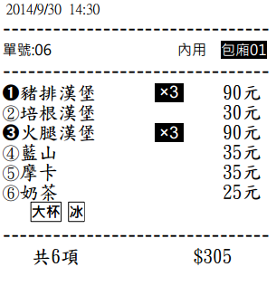

您好!!
可否將內用字體維持原狀，而將外帶或外送或電話印出字體改為反白，較易區分。
有時生意忙時，做好準備上菜，才發現是外帶單.........冏
高手您好!!可否將"外帶"印出字體反白?
1 個回答
您好
修正 "桌號" 字體以黑底白字處理
一看到右上角有黑底白字 即可判斷為內用單
應可加強辨識

請至首頁下載更新
您好!!
可否將內用字體維持原狀，而將外帶或外送或電話印出字體改為反白，較易區分。
有時生意忙時，做好準備上菜，才發現是外帶單.........冏
您好
修正 "桌號" 字體以黑底白字處理
一看到右上角有黑底白字 即可判斷為內用單
應可加強辨識

請至首頁下載更新